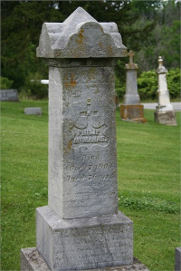

Menu:
Welcome to the McDonnell Family History Website
This is a simple landing page for links to information about the descendants of Patrick McDonnell and related families. Some of the documents are stored in a Google Drive folder.
The full family history in searchable genealogy format is linked to a subsite on the Roots Magic website. You can search for families and individuals in a name index on that site. From there you can view individual and family profiles from a dynamic pedigree chart along with family photos. The Roots Magic database can be downloaded in full in the format of a Roots Magic file for import into the Roots Magic application on your home computer.
A standard GEDCOM file (genealogical Data communication file) can also be downloaded to import into any of the other family history management applications.
Patrick McDonnell

The short story about Patrick McDonnell is that he was born, possibly in Dublin, in 1813. He worked as a driver before immigrating to the U.S. around 1850. His first wife was Deliah, maiden name unknown. With Deliah Patrick had one son before leaving Ireland, Thomas. His second son was born to Cecile Connelly in Brooklyn, New York in 1856. Patrick and his sons worked as railroad laborers moving westward from New York through Chicago before settling in Kansas City, Missouri sometime before 1890.
Philip McManus
The McManus family in America descended from Philip McManus who was born in 1829 in County Fermanagh, the son of Philip (b 1804) and Rosanna (nee Foley) McManus. Two of Philip's sisters also emigrated to the U.S. - Catherine (b 1834) and Rosannah (b 1840). Having arrived in Philadephia in 1855, Philip and his sisters lived in Indiana near Bean Blossom Township, then in Bloomington and Terre Haute until the start of the Civil War.
At age 27 Philip joinied the "Monroe Grenadiers" and served in the Union Army Company F of the 27th Indiana Volunteer Infantry Regiment until he was wounded at Antietam and discharged from an army hospital in May of 1863. Philip married Margaret Reilly (1838-1891). The family moved from Indiana to settle on a 160-acre farm near Baring, Knox County, Missouri, where they raised six sons and a daughter.